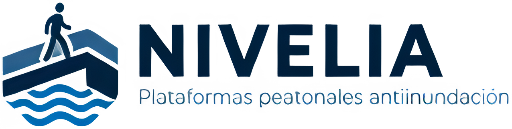

← Volver a NIVELIA S.A.S.Planificación temporal, recursos, estructura de costos y gestión integral de riesgos.
Duración estimada: ≈ 26 semanas (línea base académica)
Acta de constitución aprobada y planificación detallada.
2 semanasLevantamiento topográfico, diagnóstico hidráulico y de movilidad.
3 semanasAlternativa seleccionada y validada.
3 semanasPlanos IFC y memorias de cálculo emitidas.
5 semanasMódulos fabricados y certificados.
7 semanasFrente de obra listo (en paralelo con fabricación).
2 semanasSistema instalado.
2 semanasPruebas aprobadas y acta de puesta en servicio.
2 semanasActa de entrega y cierre del proyecto.
1 semana| Item | Descripción | Unidad | Incluye |
|---|---|---|---|
| 01 | Preliminares y señalización temporal | gl | Replanteo, cerramiento, señalización y logística. |
| 02 | Demoliciones y adecuaciones | m²/m³ | Retiro controlado de elementos que interfieran. |
| 03 | Cimentación y anclajes | m³/kg/un | Concreto, acero, pernos y elementos de apoyo. |
| 04 | Estructura metálica | kg | Fabricación y montaje del bastidor. |
| 05 | Superficie peatonal | m² | Paneles, acabado antideslizante y fijaciones. |
| 06 | Sistema mecánico | gl | Actuadores, ejes, brazos, topes y bloqueos. |
| 07 | Sistema eléctrico | gl | Tablero, protecciones, cableado y alimentación. |
| 08 | Automatización | gl | PLC/controlador, sensores, programación y señalización. |
| 09 | Instalación y montaje | gl | Mano de obra, equipos y herramientas. |
| 10 | Pruebas y puesta en servicio | gl | Protocolos, calibración y validación. |
| 11 | Mantenimiento inicial | gl | Revisión y ajustes de puesta en marcha. |
| 12 | Gestión del proyecto | gl | Dirección, ingeniería, calidad, SST y documentación. |
Diseño, dirección, control y pruebas.
Fabricación, montaje, electricidad y automatización.
Topografía, nivelación y verificación.
Montaje, torque, corte y ajuste.
Montaje de módulos según peso y acceso.
Estructura, superficie, mecanismo y control.
Diseño CAD, cálculo, programación y control documental.
| Código | Riesgo | Probabilidad | Impacto | Tratamiento |
|---|---|---|---|---|
| R-01 | Falla del mecanismo | Alta | Alta | Diseño con bloqueo, mantenimiento y prueba de ciclos. |
| R-02 | Pérdida de energía | Media | Alta | Modo manual y respaldo según criticidad. |
| R-03 | Error del sensor | Media | Alta | Redundancia/validación y finales de carrera. |
| R-04 | Interferencia con redes | Media | Alta | Levantamiento e inventario previo. |
| R-05 | Sobrecarga estructural | Baja | Alta | Memoria de cálculo e inspección. |
| R-06 | Corrosión | Media | Media | Protección superficial e inspección periódica. |
| R-07 | Atrapamiento | Baja | Alta | Protecciones, sensores y procedimiento de bloqueo. |
| R-08 | Retraso de suministros | Media | Media | Compras anticipadas y proveedores alternos. |
| R-09 | Accidente en montaje | Media | Alta | ATS, permisos, EPP y supervisión. |
| R-10 | Obstrucción hidráulica | Media | Media | Revisión de sumideros y limpieza programada. |